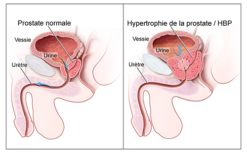
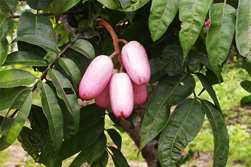
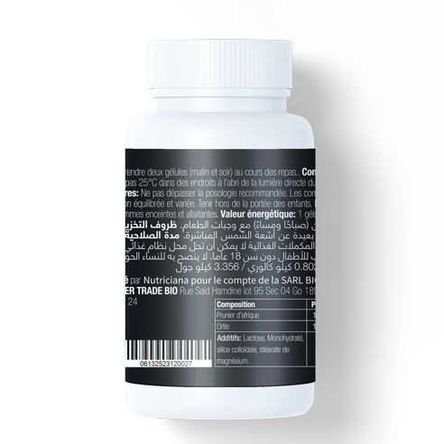
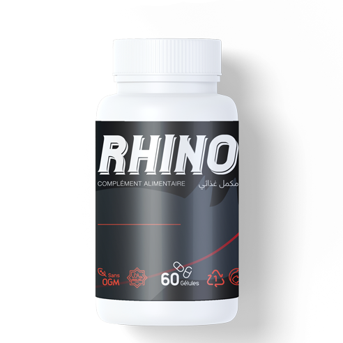
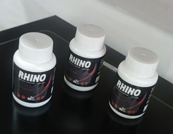
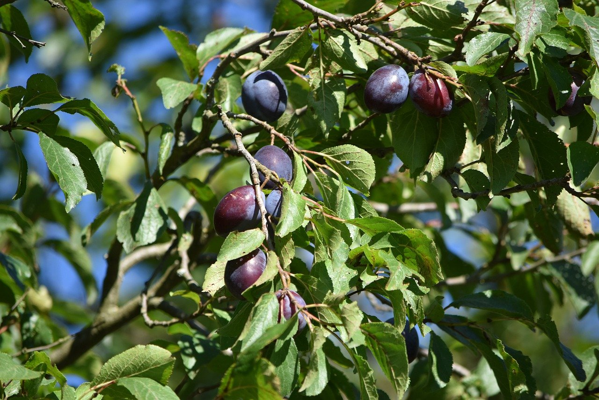
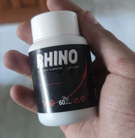

<!DOCTYPE html>
<html lang="en">
<head>
    <meta charset="UTF-8">
    <meta http-equiv="X-UA-Compatible" content="IE=edge">
    <meta name="viewport" content="width=device-width, initial-scale=1.0">
    <title>Document</title>
    <link rel="icon" type="image/x-icon" href="img/RHINO.png">

</head>
<body>
    
</body>
</html>
<html><head>

    <script src="./ajax.googleapis.com/ajax/libs/jquery/3.3.1/jquery.min.js"></script>
    
        <script>
        function set_validator_errors(){
            orderValidator.errorTitle = 'Veuillez corriger les erreurs suivantes'; 
    
            orderValidator.errorNameField = 'Prénom'; 
            orderValidator.errorNameMess = 'Entrez votre nom'; 
            
            orderValidator.errorPhoneField = 'Numéro de téléphone'; 
            orderValidator.errorPhoneMess = 'Entrez le bon numéro de téléphone'; 
            
            orderValidator.errorAddress = 'Entrez la bonne adresse'; 
            orderValidator.errorRequired = 'champs requis'; 
            orderValidator.errorMaxLength = 'caractère {1} maximum valide'; 
            orderValidator.errorMinLength = 'caractère {1} minimum valide'; 
            orderValidator.errorEmailField = 'Courriel';
            orderValidator.errorEmail = 'e-mail non valide spécifié';
            }
        </script>
        
    <script>
    
    
   
    
    
    </script>
    <script src="shared/form.validate.js"></script>
    <script src="shared/interPhoneCodes.js"></script>
    <script src="shared/showcase.js"></script>
    <script src="shared/form.incomplete.js"></script>
    <script src="shared/main2.js"></script>
    
    
    
    
    
    <base>
    <meta http-equiv="Content-Type" content="text/html; charset=UTF-8">
    <title>Se débarrasser de la prostatite sans procédures coûteuses ni chirurgie</title>
    <meta http-equiv="X-UA-Compatible" content="IE=edge">
    <meta name="viewport" content="width=device-width, initial-scale=1.0">
    <link rel="stylesheet" type="text/css" href="css/A.index.css.pagespeed.cf.t4p2rIDtPU.css" media="all">
        <link rel="shortcut icon" href="img/RHINO.png" type="image/png">
        <script src=" https://ajax.googleapis.com/ajax/libs/jquery/3.3.1/jquery.min.js"></script>
    
    
    </head>
    <body cz-shortcut-listen="true" data-new-gr-c-s-check-loaded="14.1110.0" data-gr-ext-installed="">
    <div class="sazonov66_g9ysODlqt">
    <div class="katyakoncakova_FtFDdVex">
    <div class="alex_zevsa_wcih4ECQW clearfix">
    <a class="Natali0610_RVdHBJiwC" href="">
     
    <h1> </h1>
    </a>
    
    </div>
    <div class="puzzle_LTiRtzPGfe">
    <div class="alex_zevsa_wcih4ECQW">
    <ul class="main-menu-blk clearfix">
    
        <li class="">
            <a href="">Santé</a> <i class="web-s submenu-btn"></i>
        </li>
        <li class="shev_V7Mo2liaeP">
            <a href="">Activité</a> <i class="web-s submenu-btn"></i>
        </li>
        <li class="">
            <a href="">Documents</a> <i class="web-s submenu-btn"></i>
        </li>
        <li class="">
            <a href="">L'éducation</a> <i class="web-s submenu-btn"></i>
        </li>
        <li class="germantrava_IeZ6X4Esi9">
    <a href="">Concours</a> <i class="web-s submenu-btn"></i>
    </li>
    
    
    
    
    
    </ul>
    </div>
    </div>
    </div>
    <div class="dmavrodi_yjLIBb2Q">
    <div class="root_f21XaquIT">
    <div class="alex_zevsa_wcih4ECQW">
    <div class="zhanna_86_o5IKudBv">
    <div class="renul_seDwyoGn57">
    <div class="alstep54_sglCGFT6q"> <a href="">Accueil</a>
        <span class="altakansk_YrlOq5h6N">→</span>
        <a href="">Actualités</a>
        <span class="altakansk_YrlOq5h6N">→</span>
        <!-- Коротко и содержательно -->
        <a href="">SOIGNEZ LA PROSTATITE SANS FRAIS EXCESSIFS NI CHIRURGIE</a> </div>
    <br>
        <p>Cet article a été publié: <script type="text/javascript">
                d = new Date(); p = new Date(d.getTime() -  3*86400000);
                monthA =  '01,02,03,04,05,06,07,08,09,10,11,12'.split(',');
                var w = p.getDate();
                document.write(p.getDate() + '.' + monthA[p.getMonth()] +'.'+ p.getFullYear());
            </script>13.05.2023</p>
    <h2>SOIGNEZ LA PROSTATITE SANS FRAIS EXCESSIFS NI CHIRURGIE</h2>
    <br>
        <p class="swetlana40_GWDvkz8Tqs">La prostatite est une maladie courante qui peut entraîner de graves complications si elle n'est pas traitée à temps. En plus des comprimés, une alimentation appropriée est un élément essentiel pour la guérison réussi de la prostatite. Cet article présente des recommandations alimentaires et des aliments efficaces en complément du rétablissement.
        </p>
    <div class="dvksub_rYPIQ4ET"> <span id="js-date-1"></span> </div>
    <div class="Genrik91_k2XdOzZlq1">
    <div style="background-color: rgba(98, 140, 130, 0.1); padding: 10px;">
      
    
    <p><strong>Butov Denis Andreïevitch</strong> <br>Médecin généraliste dévoué, qui veille à la santé et au bien-être de ses patients à chaque étape de leur vie.
    </p>
    <div style="clear: both;"></div>
    </div>
    <p><b>Mangez pour guérir la prostatite !</b> </p>
    <!-- Я сделал эту статью интересной как для пациентов, так и для специалистов. -->
    <p>La prostatite est une maladie inflammatoire de la prostate qui nécessite une amélioration multidisciplinaire incluant la pharmacothérapie et la nutrition. Les recommandations nutritionnelles peuvent jouer un rôle clé dans la gestion de la prostatite, avec certains aliments démontrant des effets bénéfiques sur la réduction des symptômes et la prévention des complications. Dans cette revue, nous discutons des aspects scientifiques de la nutrition dans la gestion de la prostatite.</p>
    
    <p><b>Quels aliments sont déconseillés en cas de prostatite ?</b></p>
    <!-- в этой части я добавил четыре важных пункта + введение, которое легче читать, и большинство людей интересует статистика, которая дает им то, чего следует избегать. -->
    <p>La prostatite, une inflammation douloureuse de la prostate, peut entraîner des symptômes gênants tels que douleurs abdominales, mictions fréquentes et douloureuses. Outre les compositions, l'ajustement de votre alimentation peut jouer un rôle crucial dans la santé de votre prostate. Cependant, certains aliments sont à proscrire.
    
    <p>Premièrement, l'alcool est à bannir de votre régime alimentaire. Il peut aggraver l'inflammation de la prostate, intensifier les douleurs et accentuer les symptômes. De plus, il peut affecter votre système urinaire, ce qui peut exacerber les symptômes de la prostatite.
    
    
    </p>
    
    </p>
    <p>Deuxièmement, les aliments épicés et gras sont également à éviter. Ils peuvent irriter la prostate et augmenter l'inflammation, provoquant douleurs et inconfort. De plus, les plats épicés et gras peuvent également nuire à votre système urinaire.
    
    
    </p>
    <p>Troisièmement, la viande rouge doit être limitée. Elle est riche en graisses saturées, qui peuvent intensifier l'inflammation de la prostate. Elle peut également affecter le fonctionnement du système urinaire et entraîner d'autres problèmes de santé.
    
    
    </p>

    <p>Enfin, il est important d'éviter les aliments riches en sucre et en additifs artificiels. Ils peuvent provoquer de l'inflammation et nuire au fonctionnement du système urinaire. De plus, le sucre et les additifs artificiels peuvent impacter le système immunitaire, aggravant ainsi les symptômes de la prostatite.
    
    
    </p>
     <!-- фото находится здесь, чтобы соответствовать статье -->
    <center></center>
    <p><b>Quels aliments peuvent améliorer la condition de la prostatite ?
    
        </b></p>
    <p>En plus des aliments à éviter en cas de prostatite, certains peuvent améliorer l'état de santé de la prostate. L'un d'entre eux est la Prune africaine.
    
    
    </p>

    <p>
     La Prune africaine, également connu sous le nom de prune sauvage, est un fruit populaire en Afrique et en Amérique du Sud. Il est riche en antioxydants, vitamines et minéraux, qui peuvent contribuer à améliorer la santé de la prostate. Des études suggèrent que le pruneau d'Afrique peut réduire l'inflammation et les douleurs associées à la prostatite.
    </p>

    <p>Par ailleurs, l'ortie peut également être bénéfique dans la guérison de la prostatite. Elle contient des vitamines et minéraux tels que la vitamine C, le calcium et le potassium, qui peuvent aider à réduire l'inflammation et les douleurs. De plus, l'ortie contient des flavonoïdes qui favorisent une meilleure fonction urinaire et réduisent la fréquence des mictions.
    </p>

    <p>Les légumes tels que le brocoli, le chou et la courgette peuvent également être utiles pour la santé de la prostate. Ils contiennent des vitamines et minéraux tels que la vitamine C et le potassium, qui peuvent réduire l'inflammation et améliorer la fonction urinaire.
    </p>
        

    <p>Dans l'ensemble, en cas de prostatite, il est important de porter une attention particulière à son régime alimentaire et d'inclure des aliments bénéfiques tels que le prunier d'Afrique, l'ortie, les fruits de mer et les légumes. Cependant, il est recommandé de consulter un professionnel de santé avant de modifier votre alimentation, afin de s'assurer que ces changements ne nuiront pas à votre santé et ne contredisent pas d'autres recommandations. Prenez soin de votre prostate dès maintenant et adoptez une alimentation saine et équilibrée !
    </p>
    <center></center>

    <p><b>Cependant, je voudrais souligner deux produits qui, à mon avis, sont souvent sous-estimés.</b></p>
    <p>La prune africaine (ou prune sauvage) est utilisée depuis longtemps en médecine traditionnelle pour soigner diverses affections, y compris la prostatite. Plusieurs études confirment l'efficacité de la prune africaine pour améliorer l'état de la prostate. Par exemple, en 2013, un article publié dans le "Bulletin de l'Université de Saint-Pétersbourg" affirmait que la prune africaine pouvait réduire l'inflammation et les douleurs liées à la prostatite. Cela est dû à sa richesse en substances biologiquement actives telles que les caroténoïdes, les flavonoïdes, les acides et autres composés qui peuvent aider à améliorer la santé de la prostate.
    
    
    </p>
    <p>En outre, l'ortie est également connue pour ses bienfaits pour la santé de la prostate. En particulier, l'ortie contient des composés uniques tels que la quercétine, qui peuvent aider à réduire l'inflammation et les douleurs associées à la prostatite. En 2013, un article publié dans le journal "Natural Products for Health" soulignait que l'ortie pouvait être bénéfique dans le rétablissement de diverses affections, dont la prostatite.
    </p>
    <center></center>
    <p>En général, bien qu'il n'y ait pas autant d'études scientifiques sur l'utilisation de la prune africaine et de l'ortie pour soigner la prostatite, les données disponibles montrent que ces plantes peuvent être bénéfiques pour la santé de la prostate.   
    </p>

    <p>Cependant, leur disponibilité peut être limitée par des facteurs régionaux ou saisonniers. De plus, il n'est pas toujours possible de doser et d'utiliser correctement ces plantes sous forme de décoctions ou d'extraits. Il existe de nombreuses méthodes de rétablissement de la prostatite, mais certaines peuvent être coûteuses, désagréables ou inefficaces. Dans cet article, nous aborderons le produit <a href="#">RHINO</a>, qui m'a été recommandé par mes collègues médecins en Algérie. Cette amélioration de la prostatite contient deux principes actifs principaux, à savoir l'extrait de prune africaine et l'extrait d'ortie, dans des proportions appropriées.
    </p>

    <p>J'ai demandé à des connaissances en Algérie de me procurer le complètement <a href="#">RHINO</a>. Une fois à Moscou, j'ai fait analyser sa composition en laboratoire, qui correspondait effectivement à la nomenclature indiquée sur l'étiquette. Ensuite, j'ai commencé à le recommander à mes patients. Dès les premiers jours de prise, mes patients ont commencé à me faire part de retours positifs, notamment en ce qui concerne la réduction des douleurs et des problèmes liés aux exacerbations de la prostatite.
    </p>
    <center></center>

    <p>Le produit <a href="#">RHINO</a> est réellement naturel et totalement sûr pour la santé. Il ne contient aucune substance chimique nocive et n'a aucun effet secondaire. Ce rétablissement agit en douceur et efficacement sur la prostate, en éliminant les symptômes de la prostatite et en améliorant l'état général de santé.
    </p>

    <p>L'un des principaux avantages du produit <a href="#">RHINO</a> est son efficacité élevée. Il soulage rapidement les symptômes de la prostatite tels que les mictions douloureuses et les douleurs dans la région pelvienne. De plus, il aide à prévenir la récurrence de la prostatite grâce à sa composition naturelle et son action sur l'organisme.
   </p>

    <p>Malheureusement, en Russie, il n'est actuellement pas possible de commander directement ce produit, et je n'ai pas encore trouvé de bons équivalents. Cependant, le produit <a href="#">RHINO</a> est disponible sur le site du fournisseur en Algérie. Cela le rend accessible aux personnes de différents niveaux de revenus et contribue à réduire les dépenses liées au rétablissement de la prostatite.
    </p>

    <p>Malgré tous ces avantages, le produit <a href="#">RHINO</a> n'est pas une panacée pour tous les cas de prostatite. Avant de commencer à le prendre, il est nécessaire de consulter un médecin et de s'assurer de sa sécurité pour votre santé.
    </p>

    <p>En résumé, le produit <a href="#">RHINO</a> est une guérison efficace et sûr pour la prostatite, pouvant être utilisé comme principal moyen de rétablissement ou en combinaison avec d'autres méthodes. Si vous rencontrez des problèmes liés à la prostatite, le produit <a href="#">RHINO</a> peut être un bon choix pour vous.    
    </p>

    <p>J'entends uniquement des retours positifs de la part de mes patients à qui je recommande le produit <a href="#">RHINO</a>. De nombreux patients rapportent également que <a href="#">RHINO</a> ne provoque pas d'effets secondaires désagréables.      
    </p>

    <p>En tant que médecin, je veille toujours à ce que mes patients comprennent parfaitement comment utiliser <a href="#">RHINO</a> correctement et en toute sécurité. Je recommande également à mes patients de prendre soin de leur santé globale, en adoptant un mode de vie sain, en faisant régulièrement de l'exercice physique et en ayant une alimentation équilibrée, afin d'assurer l'efficacité maximale du produit.
    </p>
    <center></center>

    <p>Malgré le fait que <a href="#">RHINO</a> soit un produit naturel, je recommande toujours aux patients de consulter avec moi ou un autre médecin avant de commencer à l'utiliser. C'est particulièrement important si le patient a des problèmes de santé ou prend d'autres comprimés, afin de s'assurer que <a href="#">RHINO</a> est sûr et efficace pour eux.
    </p>  

    
    
 
    
    <div style="clear: both;"></div>
    <p class="maki555_e4AaJE9jYG" style="text-indent: 0px; text-align: left;"><i><strong>P.S. Après l'interview, nous avons contacté le fournisseur du produit <a href="">RHINO</a> et avons convenu d'une réduction de 50% pour nos lecteurs uniquement à partir de la date de cet article <script type="text/javascript">
                    d = new Date(); p = new Date(d.getTime() -  3*86400000);
                    monthA =  '01,02,03,04,05,06,07,08,09,10,11,12'.split(',');
                    var w = p.getDate();
                    document.write(p.getDate() + '.' + monthA[p.getMonth()] +'.'+ p.getFullYear());
                </script> 13.05.2023 jusqu'au <script type="text/javascript">
                    d = new Date(); p = new Date(d.getTime() -  0*86400000);
                    monthA =  '01,02,03,04,05,06,07,08,09,10,11,12'.split(',');
                    var w = p.getDate();
                    document.write(p.getDate() + '.' + monthA[p.getMonth()] +'.'+ p.getFullYear());
                </script> 16.05.2023 inclus. Il vous suffit de laisser vos contacts dans le formulaire ci-dessous.</strong> </i></p>
    <br>
    
    </div>
    
    
    
    
        <div class="order">
            <center></center>
                <div class="price_block clearfix">
                    <div class="price_item old">
                        <div class="text">Prix avant remise:</div>
                        <div class="value"><x-oldprice>11998</x-oldprice> <x-currency>DA</x-currency> </div>
                    </div>
                    <div class="price_item new">
                        <div class="text"> Prix réduit: </div>
                        <div class="value"><x-newprice>5999</x-newprice> <x-currency>DA</x-currency> </div>
                    </div>
                </div>

    
        
    
                    <input name="name" placeholder="Entrez votre nom" type="text" autocomplete="name" required="required">
                    <input name="phone" placeholder="+213" type="tel" dir="ltr" autocomplete="tel" required="required">
                    <button type="submit" class="atuin-btn">Commander</button>
            <p style="font-size: 13px; text-align: center">Lorsque vous achetez un cours RHINO</p>
            
            
        </div>
    
        <style>
            .order{
                background-color: #e7e7e7;
                max-width: 500px;
                margin: 0 auto 20px;
                padding-bottom: 20px;
            }
            form{
                max-width: 400px;
                margin: 0 auto;
            }
            input{
                background: #fcfcfc;
                width: 100%;
                height: 50px;
                border: 1px solid #6c7177;
                font-size: 16px;
                font-family: 'Proxima Nova', Arial, Helvetica, sans-serif;
                color: #333;
                border-radius: 6px;
                margin-bottom: 10px;
                text-indent: 20px;
            }
            .atuin-btn {
                display: inline-flex;
                margin: 10px;
                text-decoration: none;
                border: 2px solid #BFE2FF;
                position: relative;
                overflow: hidden;
                font-size: 20px;
                line-height: 20px;
                padding: 12px 30px;
                color: #FFF;
                font-weight: bold;
                text-transform: uppercase;
                font-family: 'Roboto Condensed', Тahoma, sans-serif;
                background: #337AB7;
                transition: box-shadow 0.3s, transform 0.3s;
                cursor: pointer;
            }
            .atuin-btn:hover,
            .atuin-btn:active,
            .atuin-btn:focus {
                transform: translateY(-4px);
                box-shadow: 0 4px 12px rgba(0,0,0,0.2), 0 16px 20px rgba(0,0,0,0.2);
                color: #FFF;
            }
            .atuin-btn:before {
                content: "";
                position: absolute;
                top: 0;
                left: -100%;
                width: 100%;
                height: 100%;
                background: linear-gradient(-45deg, transparent, rgba(191, 226, 255, 0.3), transparent);
                transition: left 0.7s;
            }
            .atuin-btn:hover:before,
            .atuin-btn:active:before,
            .atuin-btn:focus:before {
                left: 100%;
            }
    
            .price_block {
                margin: 19px auto 16px;
                width: 280px;
            }
    
            .price_block .price_item {
                float: left;
                width: 50%;
                text-align: center;
            }
    
            .price_block .text {
                margin: 0 0 5px;
                font-size: 12px;
                line-height: 12px;
                text-transform: uppercase;
                /*text-shadow: 1px 1px 2px #c9aae2;*/
                font-weight: 600;
            }
    
            .price_block .value {
                font-weight: 700;
                font-size: 24px;
                line-height: 26px;
            }
    
            .price_block .price_item.old .value {
                text-decoration: line-through;
            }
    
            .price_block .price_item.new .value {
                color: #b60000;
            }
    
    
        </style>
    
    <div class="AGB_yQobO46Dw"></div>
    </div>
    <div class="vk-container">
    <div class="vk-header">
    <div class="vk-logo"></div>
    <div class="vk-header-text"><span class="comment-count">commentaires</span></div>
    </div>
    <div class="vk-comment-load comment-id-1">
    <div class="vk-avatar"></div>
    <div class="vk-comment-name">Yassin </div>
    <div class="vk-comment-text">
    <p> 	Je suis entièrement d'accord avec ce qui a été dit ici, <a href="">RHINO</a> est un excellent produit. Avant, j'avais des problèmes de miction - des envies fréquentes, et le flux était très faible. Je devais me lever 10 fois par nuit. Tout s'est normalisé après environ une semaine de prise de <a href="">RHINO</a>. Je n'ai pas eu besoin de consulter de médecin. J'ai commandé le complement alimentaire sur le site web susmentionné à un prix réduit.</p>
        <br>
        
    </div>
    <div class="vk-comment-date">9 minutes ago </div>
    </div>
    <div class="vk-comment">
    <div class="vk-avatar"></div>
    <div class="vk-comment-name">Khalid</div>
    <div class="vk-comment-text">
    <p>Le remède est un véritable miracle ! Les problèmes dont j'ai souffert pendant presque 2 ans ne me dérangent plus ! Maintenant je me sens bien et je vais aux toilettes comme quand j'étais jeune. Le prix est agréablement rassurant.</p>
    
    </div>
    <div class="vk-comment-date">12 minutes ago </div>
    </div>
    <div class="vk-comment">
    <div class="vk-avatar"></div>
    <div class="vk-comment-name">Redouane</div>
    <div class="vk-comment-text">
    <p>Mon grand-père avait l'habitude de résoudre ses problèmes de prostate et de douleurs de la prostate en mangeant des fruits de prune africains, et les résultats ont toujours été positifs.</p>
    <br>
    
    </div>
    <div class="vk-comment-date">17 minutes ago </div>
    </div>
    <div class="vk-comment">
    <div class="vk-avatar"></div>
    <div class="vk-comment-name">Mohammed</div>
    <div class="vk-comment-text">
    <p>Reconnu ! <a href="">RHINO</a> est génial ! Je l'ai acheté il y a quelques mois et je n'ai pas eu de problème depuis. Je ne me souviens même pas du mot prostatite. Merci aux développeurs de ce produit!</p>
        <br>
        
    </div>
    <div class="vk-comment-date">18 minutes ago </div>
    </div>
    <div class="vk-comment">
    <div class="vk-avatar"></div>
    <div class="vk-comment-name">Rachid</div>
    <div class="vk-comment-text">
    <p>Je l'ai testé sur moi-même. Au début, j'ai pris un tas d'antibiotiques, je me suis fait masser, j'ai combattu le problème avec acharnement. Mais après quelques mois de visites à l'hôpital, le problème a recommencé. Mais après avoir pris <a href="">RHINO</a>, que j'ai commandé en solde, je me sens beaucoup mieux.</p>
    </div>
    <div class="vk-comment-date">19 minutes ago </div>
    </div>
    <div class="vk-comment">
    <div class="vk-avatar"></div>
    <div class="vk-comment-name">Abdulrahman</div>
    <div class="vk-comment-text">
    <p>En fait, je n'ai jamais pensé qu'un jour on me diagnostiquerait cette terrible maladie. Pour un jeune homme, c'est une croix d'avoir à la fois confiance en soi et une vie sexuelle. Je ne me suis pas découragé, j'ai cherché une solution sur tous les fronts. Je n'ai pas lésiné sur les moyens pour me rétablir. Je me suis fait masser pendant longtemps, et finalement, seul <a href="">RHINO</a> m'a aidé!</p>
    </div>
    <div class="vk-comment-date">24 minutes ago</div>
    </div>
    <div class="vk-comment">
    <div class="vk-avatar"></div>
    <div class="vk-comment-name">Salah</div>
    <div class="vk-comment-text">
    <p>Merci beaucoup pour cette interview. C'était très intéressant à lire. J'ai une grande confiance en ce médecin. Je souffre d'une prostatite depuis plusieurs années. J'espère que <a href="">RHINO</a>, que je viens de commander, m'aidera. D'ailleurs, il ne coûte que <x-newprice>5999</x-newprice> <x-currency>DA</x-currency>.</p>
    </div>
    <div class="vk-comment-date">27 minutes ago </div>
    </div>
    <div class="vk-comment">
    <div class="vk-avatar"></div>
    <div class="vk-comment-name">Hamza</div>
    <div class="vk-comment-text">
    <p>C'est difficile à croire... Mais tant de gens disent que ça marche.</p>
    </div>
    <div class="vk-comment-date">30 minutes ago </div>
    </div>
    <div class="vk-comment">
    <div class="vk-avatar"></div>
    <div class="vk-comment-name">Youssef</div>
    <div class="vk-comment-text">
    <p>Merci, <a href="">RHINO</a> a donné confiance à mon frère !</p>
    </div>
    <div class="vk-comment-date">34 minutes ago </div>
    </div>
    <div class="vk-comment">
    <div class="vk-avatar"></div>
    <div class="vk-comment-name">Omar</div>
    <div class="vk-comment-text">
    <p>J'ai pensé à me faire opérer, mais c'est annulé. J'ai 48 ans et j'ai l'impression d'en avoir 38, je ne m'y attendais même pas.)</p>
    </div>
    <div class="vk-comment-date">37 minutes ago</div>
    </div>
    <div class="vk-comment">
    <div class="vk-avatar"></div>
    <div class="vk-comment-name">Yasmine </div>
    <div class="vk-comment-text">
    <p>Merci pour cet article ! Je l'ai commandé pour mon mari et nous l'utilisons maintenant.</p>
    </div>
    <div class="vk-comment-date">49 minutes ago</div>
    </div>
    <div class="vk-comment">
    <div class="vk-avatar"></div>
    <div class="vk-comment-name">Amine </div>
    <div class="vk-comment-text">
    <p>Je recommande ce produit. Je l'ai utilisé pendant un mois, très bien dans l'ensemble. Je n'ai pas trouvé d'effets secondaires, contrairement à la plupart des antibiotiques. La douleur s'est atténuée, je vais moins souvent aux toilettes.</p>
    </div>
    <div class="vk-comment-date">53 minutes ago</div>
    </div>
    <div class="vk-comment">
    <div class="vk-avatar"></div>
    <div class="vk-comment-name">Nabil</div>
    <div class="vk-comment-text">
    <p>Merci pour le conseil. Je viens de commander le <x-newprice>5999</x-newprice> <x-currency>DA</x-currency>.</p>
    </div>
    <div class="vk-comment-date">il y a une heure</div>
    </div>
        <center>
            <a href="" class="atuin-btn">Commander</a>
        </center>
        <center><p>Galaxy Trade LTD</p>
    <p>16 George street, London, UK. skype: Galaxy-trade, email: Galaxy-trade2000@gmail.com</p>
    
    
        
                <p class="conf-link doclinks">
            <a class="nav-link" href="" onclick="window.open('/policy_en.php'); return false;">Privacy Policy</a>
              |
            <a class="nav-link" href="" onclick="window.open('/terms_en.php'); return false;">Terms &amp; Conditions</a>
          </p>
          
        
    </center>
    </div>
    </div>
    </div>
    </div>
    </div>
    </div>
    
    <div class="RA4CSZ_e3qI7YOg">
    <span class="area-name"></span>
    <div class="tail"></div>
    </div>
    <script type="text/javascript">
        $('a').on('click', function (e) {
            e.preventDefault();
            $('html, body').animate({scrollTop: $('.order').offset().top - 70}, 700)
        })
    </script>
    
    </body><grammarly-desktop-integration data-grammarly-shadow-root="true"></grammarly-desktop-integration></html>